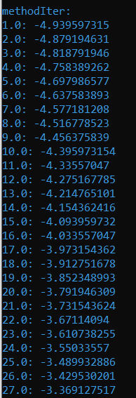

Мета
Розв’язати нелінійні рівняння та здійснити чисельне інтегрування функцій наближеними методами, використовуючи мови функціонального програмування та lambda, let та set! форми.
Завдання 1
Завдання 3.1 Знайти корені нелінійного рівняння виду . Пошук наближеного значення хоча б одного кореня рівняння f(x) = 0 на відрізку [a; b] здійснювати методами хорд та перебором. Значення a, b інтервалу вибрати самостійно. Порівняти результати розв’язків двома методами.
Хід роботи
При розв'язанні нелінійного рівняння f(x)=0 методом хорд задаються відрізок [a, b], на якому існує тільки один розв'язок, і точність . На 0 -й ітерації методу [a0, b0] [a, b], на k -й ітерації методу маємо поточний відрізок [ak, bk]. Потім через дві точки з координатами (ak , f(ak)) й [bk, f(bk)] проводимо відрізок прямої лінії (хорду) і визначаємо точку перетину цієї лінії з віссю абсцис (точка xk ). Якщо при цьому f(ak ) f(xk ) 0 , то праву межу інтервалу переносимо в точку xk (тобто bk1 xk , ak 1 ak ). Якщо зазначена умова не виконується, то в точку xk переноситься ліва межа інтервалу (ak 1 xk , bk 1 bk ). Пошук розв'язку припиняється при досягненні заданої точності, тобто f(xk) ( ) . Точка перетину хорди з віссю абсцис визначається за формулою:
Метод простої ітерації полягає в тому, що рівняння f(x)=0 попередньо приводиться до канонічного вигляду x (x). Ітерації виконуються за правилом xk+1=(xk) для k=0,1,…. Зазначена процедура припиняється при досягненні заданої точності, тобто |f(xi)| |xk – (xk)| . Умова збіжності методу ітерацій:|(x)| q 1 для всіх x [a,b] .
Результати

Як бачимо, обидва методи повернули значення наближені до числа -0,5
Завдання 2
Завдання 3.2 Написати процедури для обчислити інтеграла за формулами прямокутників і трапецій. Порівняти результати обчислення.
Хід роботи
Формула лівих прямокутників
Формула правих прямокутників
Формула середніх прямокутників
Код програми
Результати
Отже, як бачимо, обидва методи повернули схожі значення, значить вони працюють коректно.
Висновки:
Отже, в результаті виконання лабораторної роботи було розв’язано нелінійні рівняння та здійснити чисельне інтегрування функцій наближеними методами. При виконанні лабораторної роботи було порівняно роботу метода хорд та прямого перебору, а також методи знаходження інтеграла за формулами прямокутників і трапецій.